Free for Windows 10 & 11
Starlight Atmosphere
Calm animated seasons on your desktop & taskbar.
Falling leaves in autumn, snow in winter, blossoms in spring and warm light in summer – a gentle scene on top of your screen that never gets in your way.
- No ads
- No tracking
- No account
- Works offline
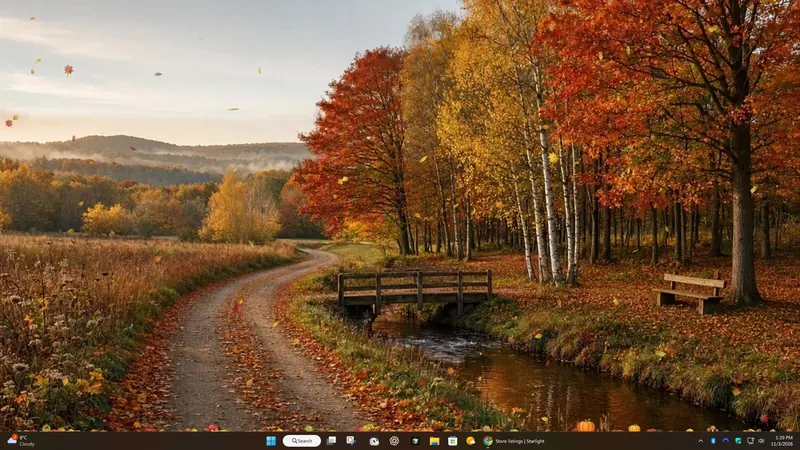
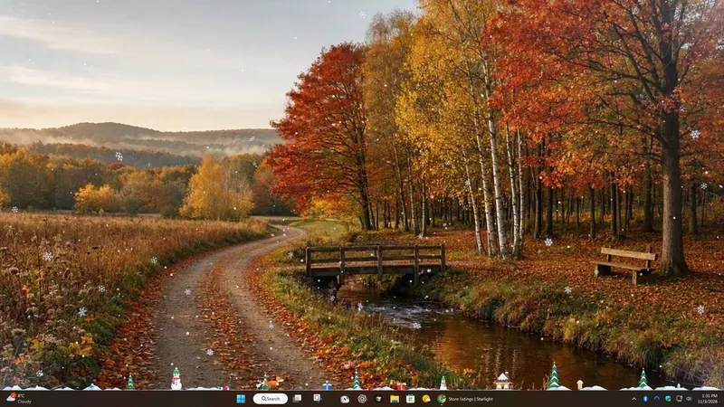
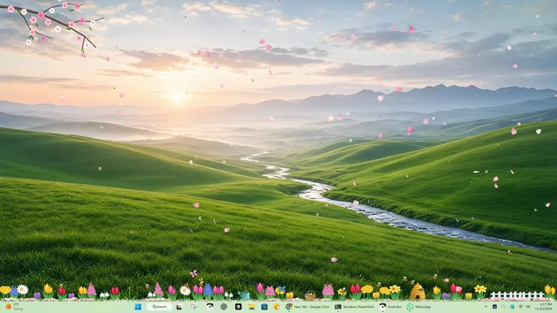
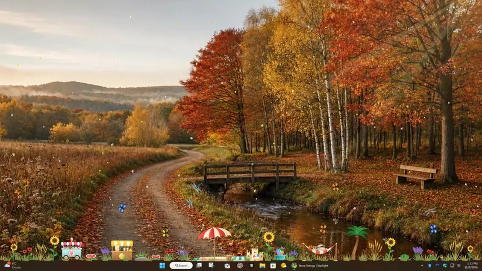
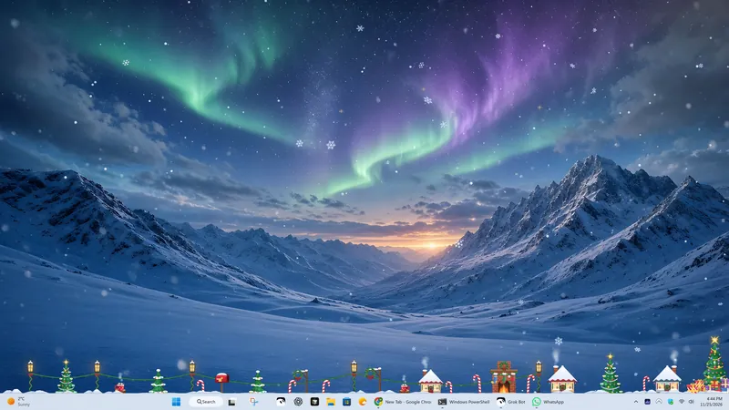
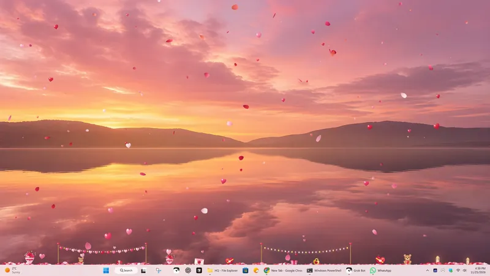
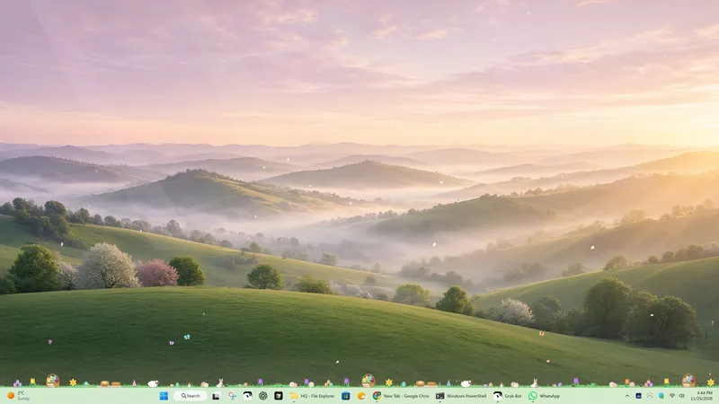
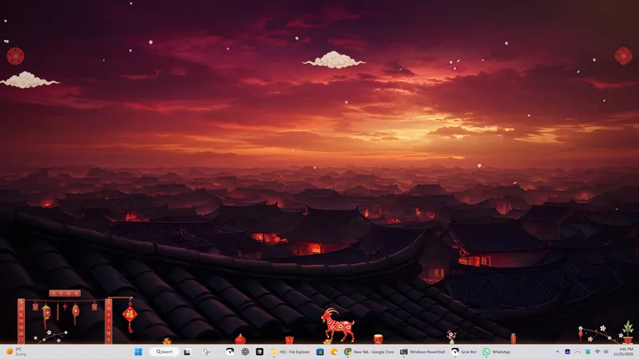
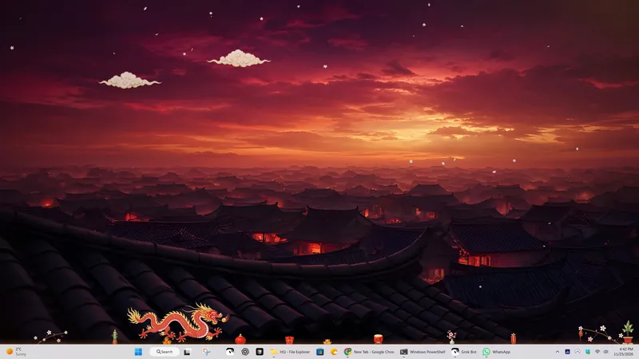
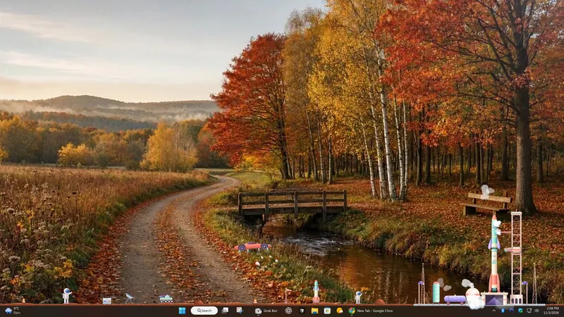
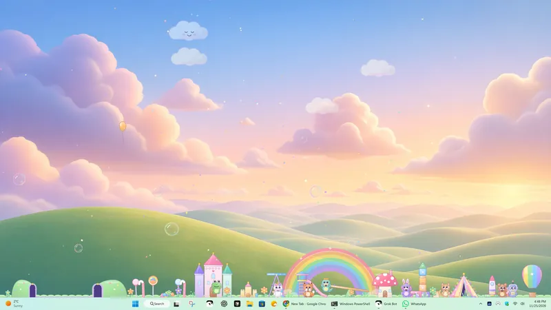
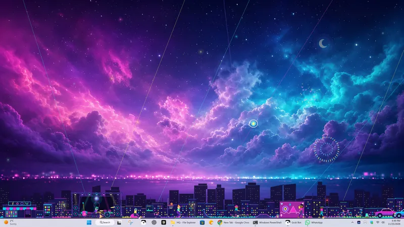
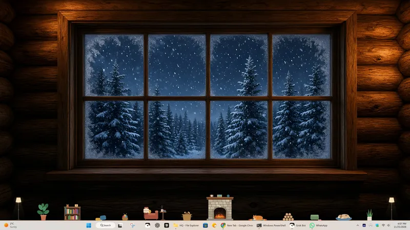
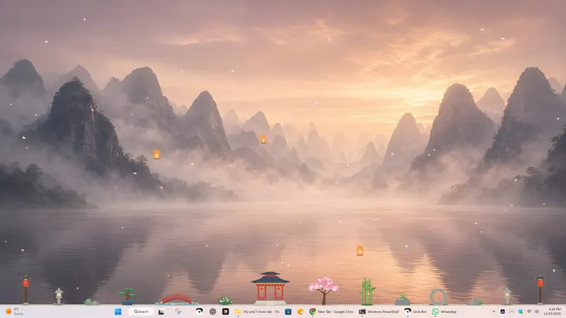
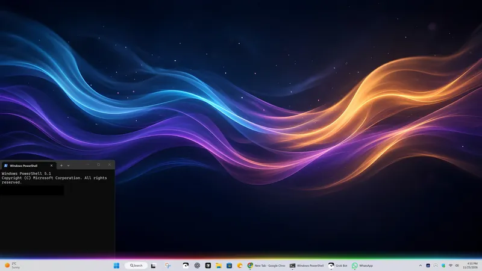
Bring the seasons to your desktop
Starlight Atmosphere adds a calm, animated scene on top of your screen and along the taskbar. It follows the season of the year by itself, or you pick the one you like. Everything lives in the tray icon. Right-click it and you're done.
Features
Click-through
The overlay never blocks your mouse or keyboard. Work as usual.
Automatic seasons
Follows the season by date, or choose your favourite and keep it.
Choose how much
Full screen, extended taskbar or taskbar only, plus three intensity levels, wind strength, light effects and 30/60 fps.
Temporary focus
Switch to taskbar-only for 30 or 60 minutes and come back automatically.
Stays out of the way
Pauses itself when a full-screen app or game is running, and when the PC is locked.
Lightweight & private
No account, no ads, no internet access, no data collected.
Speaks your language
28 interface languages: all 24 official EU languages plus Chinese (Simplified and Traditional), Japanese and Korean. It follows your Windows language.
Handy hotkeys
Ctrl+Alt+A on/off, Ctrl+Alt+W next atmosphere, Ctrl+Alt+F focus.
Free themes
Autumn
Falling leaves and warm taskbar decorations.
Winter
Soft snow drifting down and settling on the taskbar.
Spring
Blossoms floating on a light breeze.
Summer
Warm light and slow glowing motes.
Space Launch
A rocket launch site on your taskbar, with its own events.
The four seasons switch automatically by date. Space Launch can be picked any time from the tray menu.
Want the backdrops from the screenshots? Download the free 4K wallpapers.
No ads
Not now, not later.
No tracking
No analytics, no telemetry. The app doesn't use the internet.
No account
Install it and it just works.
Lightweight
Pauses by itself when you game or lock the PC.
Free. Calm. Yours.
Requires Windows 10 version 1809 or later, x64.
Enjoying it? You can support the developer on PayPal. It's entirely optional and doesn't unlock anything.